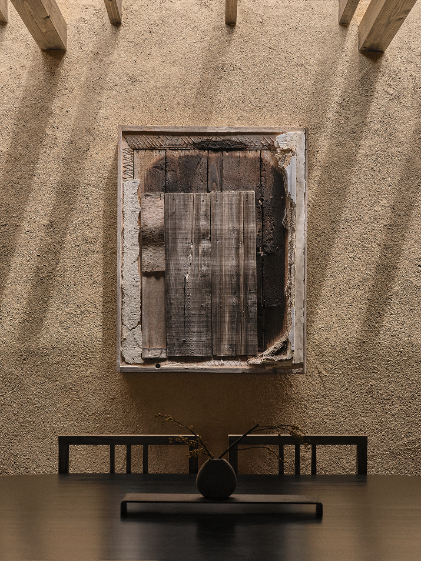
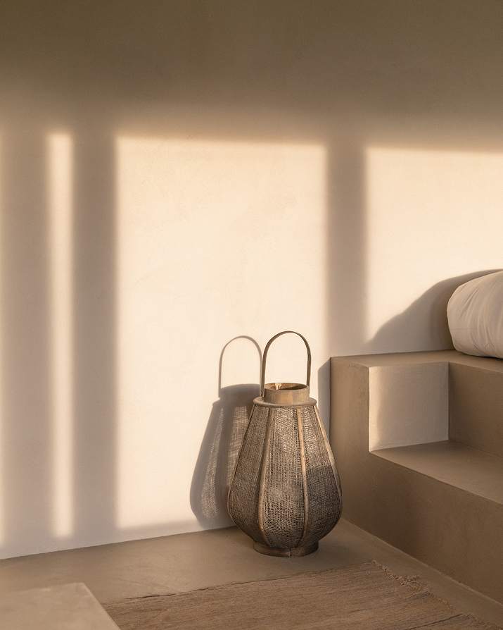
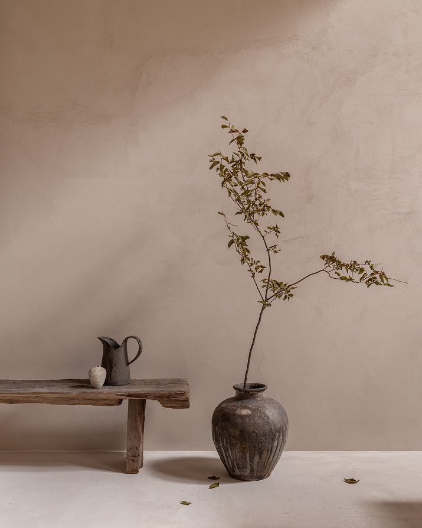

Where tradition meets intention Light as timekeeper The memory of making A room that waits with youThe Grain
The Annex is built where Japanese tradition and contemporary design meet without compromise. Tsuchikabe earth walls sit alongside clean Scandinavian lines. Karimoku joinery shares a room with hinoki timber beams. Nothing here is nostalgic for its own sake — every traditional element earns its place by making the space feel more present, more grounded, more alive.
Norm Architects and Keiji Ashizawa Design share a belief that restraint is not minimalism — it is knowing which traditions to carry forward and which to leave behind. The Annex is their answer: a house where four centuries of Kyoto craft live quietly inside a modern floor plan.
伝統と現代の交差 — 新しい日本の住まい
The Light
At the Annex, light is not decoration — it is the clock. A central light well tracks the sun's path across interior clay walls, marking morning in warm ochre and afternoon in long, quiet shadows. The house was designed so that you feel the hour without checking it, so that the rhythm of a day in Kyoto writes itself across the rooms you inhabit.
Every window angle and shoji screen was calibrated during design to shape how light enters and leaves each room. By evening, the walls hold a residual warmth that no artificial source can replicate — a quality the plasterers call "breathing light."
光は時計 — 一日のリズムを刻む家
The Hands
Every surface and texture in the Annex carries the memory of the hands that shaped it. The plasterer's trowel arcs are left visible in the walls. The joiner's chisel marks remain in the timber joints. The ceramicist's fingerprints rest in the glaze. In a world of machine-perfect surfaces, the Annex is built by people, for people — and it shows.
More than a dozen artisans will contribute to the finished house, each bringing a craft tradition passed through generations. No two rooms will bear the same marks. The imperfections are not flaws — they are proof that someone cared enough to be here.
手の記憶 — すべての表面に宿る人の証
The Interval
The Annex is designed to slow you down. The entrance narrows before it opens. Corridors turn so you cannot see everything at once. A garden appears where you did not expect it. These are not architectural tricks — they are invitations to pause, drawn from the spatial wisdom of the machiya tradition, where every threshold marks a shift in atmosphere and attention.
The Japanese concept of ma — the meaningful void between things — is the Annex's hidden architect. Rooms are shaped not only by what fills them, but by the silence and stillness they protect.
間 — 余白が導く静寂の建築